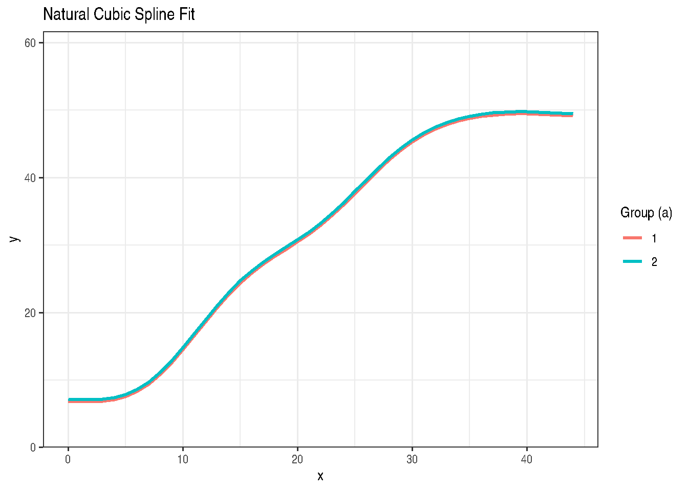
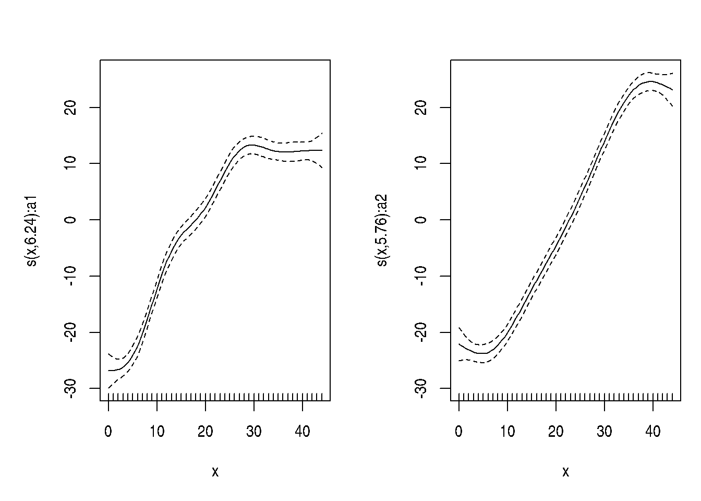

Chapter 16: Smoothing Splines and Additive Models
Nonparametric Regression and Penalized Spline Models
2026-05-17
Source:vignettes/chapter-16-smoothing-splines.qmd
1 Overview
Chapter 16 uses the mixed model representation of penalized splines to fit smooth curves. The key insight is that a penalized spline fit can be expressed as a LMM:
\[\mathbf{y} = \mathbf{X}\pmb{\beta} + \mathbf{Z}\mathbf{u} + \pmb{\varepsilon}\]
where: - \(\mathbf{X}\pmb{\beta}\): polynomial fixed effects (trend) - \(\mathbf{Z}\mathbf{u}\): spline basis random effects (\(\mathbf{u} \sim \mathcal{N}(\mathbf{0}, \sigma^2_u\mathbf{I})\))
The ratio \(\sigma^2_e / \sigma^2_u\) controls the smoothing penalty.
2 Spline Regression Example (DataSet8.7)
DataSet8.7 contains spline regression data from Chapter 8.
'data.frame': 270 obs. of 3 variables:
$ a: Factor w/ 2 levels "1","2": 1 1 1 1 1 1 1 1 1 1 ...
$ x: int 0 0 0 1 1 1 2 2 2 3 ...
$ y: num 3.5 3 7.3 5.2 5.2 5.5 3.1 7.1 5 6.3 ...2.1 Truncated power basis spline (mixed model)
# Create knots at quantiles of x
knots <- quantile(DataSet8.7$x, probs = seq(0.1, 0.9, by = 0.1))
# Truncated power basis
Z_spline <- outer(DataSet8.7$x, knots, FUN = \(x, k) pmax(x - k, 0)^2)
colnames(Z_spline) <- paste0("z", seq_len(ncol(Z_spline)))
spline_data <- cbind(DataSet8.7, as.data.frame(Z_spline))
# Fit via lme4 using the mixed model representation
# Fixed: intercept + linear trend; Random: spline knot effects
spline_form <- as.formula(paste(
"y ~ x + a +",
paste(paste0("(0 + ", colnames(Z_spline), " | a)"), collapse = " + ")
))2.2 Natural cubic spline via ns()
Call:
stats::lm(formula = y ~ splines::ns(x, df = 6) + a, data = DataSet8.7)
Residuals:
Min 1Q Median 3Q Max
-13.2851 -4.3227 -0.0877 4.3116 13.4220
Coefficients:
Estimate Std. Error t value Pr(>|t|)
(Intercept) 6.8654 1.5869 4.326 2.16e-05 ***
splines::ns(x, df = 6)1 19.3849 2.1199 9.144 < 2e-16 ***
splines::ns(x, df = 6)2 24.3583 2.6106 9.330 < 2e-16 ***
splines::ns(x, df = 6)3 39.8106 2.3702 16.796 < 2e-16 ***
splines::ns(x, df = 6)4 43.2389 2.0713 20.875 < 2e-16 ***
splines::ns(x, df = 6)5 41.9543 3.9787 10.545 < 2e-16 ***
splines::ns(x, df = 6)6 42.6558 1.8203 23.434 < 2e-16 ***
a2 0.3163 0.7002 0.452 0.652
---
Signif. codes: 0 '***' 0.001 '**' 0.01 '*' 0.05 '.' 0.1 ' ' 1
Residual standard error: 5.753 on 262 degrees of freedom
Multiple R-squared: 0.8865, Adjusted R-squared: 0.8834
F-statistic: 292.2 on 7 and 262 DF, p-value: < 2.2e-16
pred_data <- DataSet8.7
pred_data$fitted <- stats::fitted(fit_ns)
ggplot2::ggplot(pred_data, ggplot2::aes(x = x, y = y, colour = a, group = a)) +
ggplot2::geom_point(alpha = 0.5) +
ggplot2::geom_line(ggplot2::aes(y = fitted), linewidth = 1) +
ggplot2::labs(
title = "Natural Cubic Spline Fit",
x = "x",
y = "y",
colour = "Group (a)"
) +
ggplot2::theme_bw()
2.3 Penalized spline via mgcv
if (requireNamespace("mgcv", quietly = TRUE)) {
s <- mgcv::s
fit_gam <- mgcv::gam(
y ~ a + s(x, by = a, k = 8),
data = DataSet8.7,
method = "REML"
)
summary(fit_gam)
if (requireNamespace("gratia", quietly = TRUE)) {
gratia::draw(fit_gam)
} else {
plot(fit_gam, pages = 1, shade = TRUE)
}
}
2.4 Additive mixed model via gamm4
if (requireNamespace("gamm4", quietly = TRUE)) {
s <- mgcv::s
fit_gamm4 <- gamm4::gamm4(
y ~ a + s(x, by = a, k = 8),
random = ~(1 | a),
data = DataSet8.7
)
summary(fit_gamm4$gam)
lme4::VarCorr(fit_gamm4$mer)
} Groups Name Std.Dev.
Xr s(x):a1 46.00742
Xr.0 s(x):a2 31.91498
a (Intercept) 0.24696
Residual 4.136903 Key Takeaways
- Penalized splines are LMMs: fixed polynomial trend + random spline deviations; the smoothing parameter is \(\sigma^2_e / \sigma^2_u\).
-
splines::ns()inlm()gives a natural cubic spline with \(df\) knots. -
mgcv::gam()estimates the smoothing penalty by REML. -
gamm4::gamm4()exposes the mixed-model representation when the optional package is available.
4 References
Stroup, W. W., Ptukhina, M., and Garai, S. (2024). Generalized Linear Mixed Models: Modern Concepts, Methods and Applications (2nd ed.). CRC Press.